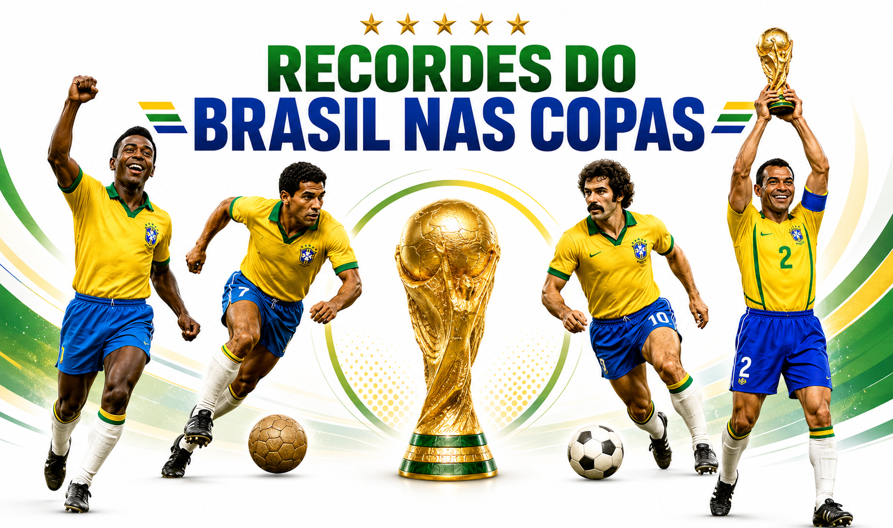

Você Sabia?
Números, recordes e curiosidades que mostram por que o Brasil é considerado o país do futebol.
Recordes do Brasil nas Copas
O Brasil não é apenas o maior campeão da história das Copas do Mundo. A seleção reúne marcas que nenhuma outra equipe conseguiu igualar:
- Único país presente em todas as edições da Copa do Mundo;
- Seleção com mais títulos mundiais: 5 (1958, 1962, 1970, 1994 e 2002);
- Seleção com mais vitórias e mais jogos disputados na história do torneio;
- Pelé é o único jogador a ser tricampeão mundial (1958, 1962 e 1970);
- Cafu é o único jogador a disputar três finais consecutivas de Copa do Mundo.

Linha do tempo
1950
O Brasil sedia sua primeira Copa do Mundo e chega à final, mas é surpreendido pelo Uruguai no Maracanã - episódio conhecido como "Maracanazo".
1958
Primeiro título mundial, na Suécia, com a estreia de um garoto chamado Pelé.
1970
Tricampeonato no México. O Brasil garante definitivamente a posse da Taça Jules Rimet.
1994
Tetracampeonato nos Estados Unidos, encerrando 24 anos de jejum de títulos.
2002
Pentacampeonato no Japão e na Coreia do Sul, com a quinta estrela ganhando o escudo da CBF.
Rumo ao hexacampeonato
A próxima Copa do Mundo será disputada em 2026, nos Estados Unidos, no México e no Canadá - a primeira edição da história com 48 seleções participantes. Depois de mais de duas décadas sem erguer a taça, o Brasil chega à competição em busca da sexta estrela, a marca do hexacampeonato.